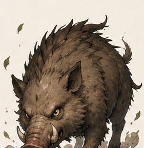

敵のターン開始時、毒/出血/炎上の蓄積ダメージが入る瞬間に進行を一時停止し、VFX+ダメージを1種類ずつ見せてから敵の行動へ移る案の確認用。VFX・効果音・サイズ/位置はVFXエディタでエクスポートした割り当てをそのまま使用。
割り当て(エディタ出力より): 毒=kenney_fart(35px)+slime_04、出血=blood_impact(52px)+slime_01、炎上=flame_02(75px、加算合成)。
現状の本体は「小さいポップが0.7秒間隔で流れるだけ」で、VFXも明確な停止もありません。新演出は「暗転スポットライト→種類チップ→VFX+被弾リアクション+大きめダメージ→次の種類→明転→敵の行動」の順で、処理順は炎上→毒→出血。被弾リアクションは本体の通常攻撃被弾と完全に同じ(白い発光+ノックバック+潰れ伸び)です。